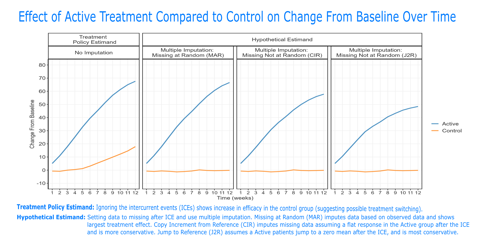
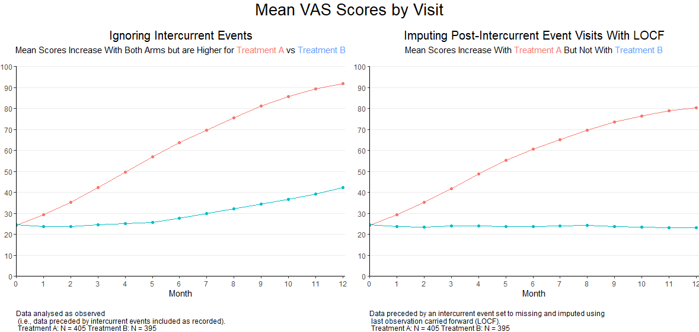
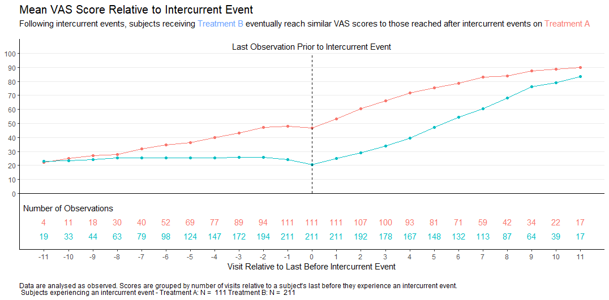

In clinical trials, intercurrent events are post-baseline occurrences that affect the interpretation or existence of outcome data. Visualisations help understand the possible impact of these events on the interpretation of the study results.
The Background:
Intercurrent event: event occurring after initiation of study intervention which either precludes the observation of the outcome variable or affects its measurement or interpretation.
Data set:
The Challenge:
Compare the two treatment arms, considering how intercurrent events might be handled.
A description of the challenge can also be found here.
A recording of the session can be found here.



link to code
library(ggplot2)
library(tidyverse)
library(haven)
library(ggh4x)
data <- read_sas("lsm_all.sas7bdat") %>%
arrange(method, treat, avisitn) %>%
mutate(
facet_group = case_when(
method == 1 ~ "Treatment \n Policy Estimand",
TRUE ~ "Hypothetical Estimand"
),
group_label = case_when(
method == "1" ~ "No Imputation",
method == "2" ~ "Multiple Imputation: \nMissing at Random (MAR)",
method == "3" ~ "Multiple Imputation: \nMissing Not at Random (CIR)",
method == "4" ~ "Multiple Imputation: \nMissing Not at Random (J2R)"
)
)
my_colors <- c("1" = "#1f77b4", "2" = "#ff7f0e")
my_labels <- c("1" = "Active", "2" = "Control")
my_panels <- c("1" = " ", "2" = "Missing at Random", "3" = "Copy Increment\n from Reference", "4" = "Jump to Reference", "5" = "Treatment Policy \n Estimand", "6" = "Hypothetical \n Estimand")
my_black <- "#252525"
data$method <- factor(data$method, levels = c(1,2,3,4))
data$facet_group <- factor(data$facet_group, levels = c("Treatment \n Policy Estimand", "Hypothetical Estimand"))
data$group_label <- factor(data$group_label, levels = c("No Imputation", "Multiple Imputation: \nMissing at Random (MAR)", "Multiple Imputation: \nMissing Not at Random (CIR)", "Multiple Imputation: \nMissing Not at Random (J2R)"))
custom_labels <- c(
"1" = "No Imputation",
"2" = "Multiple Imputation: \nMissing at Random (MAR) ",
"3" = "Multiple Imputation: \nCopy Increment ",
"4" = "Multiple Imputation: \nJump to Reference "
)
plot <- ggplot(data) +
geom_line(aes(x = avisitn, y = Estimate, color=factor(treat)), linetype = 1, size=1, alpha=0.8) +
# facet_grid(~ method, labeller = as_labeller(my_panels)) +
facet_nested(~ facet_group + group_label) +
scale_x_continuous("Time (weeks)", limits=c(1, 12), breaks = 0:12) +
scale_y_continuous("Change From Baseline", limits=c(-10, 80), breaks=seq(-10, 80, by = 10)) +
scale_color_manual(" ", values = my_colors, labels = my_labels) +
theme(panel.background=element_rect(fill="white"),
panel.grid.major=element_line(colour = "#f0f0f0",
linewidth = 0.5,
linetype = 1),
panel.border=element_rect(fill = NA,
colour = my_black,
linewidth = 1,
linetype = 1),
strip.background = element_rect(fill = NA,
colour = my_black,
linewidth = 1,
linetype = 1),
strip.text = element_text(
colour = my_black,
size = 12),
axis.line.y=element_line(colour = my_black,
linewidth = 0.5,
linetype = 1),
axis.text.x=element_text(
colour = my_black,
size = 11),
axis.text.y=element_text(
colour = my_black,
size = 12),
axis.title=element_text(
colour = my_black,
size =12),
legend.text=element_text(
colour = my_black,
size = 12))
ggsave(plot, filename = "lsm_panel.png", width = 12, height = 6)And the SAS code to create lsm_all.sas7bdat
libname out ".";
* Download macros from https://www.lshtm.ac.uk/research/centres-projects-groups/missing-data#dia-missing-data;
%inc "Part1A_34.sas";
%inc "Part1B_47.sas";
%inc "Part2A_40.sas";
%inc "Part2B_31.sas";
PROC IMPORT OUT= WORK.a
DATAFILE= "WWW_AUG2025.xlsx"
DBMS=EXCEL REPLACE;
RANGE="Sheet1$";
GETNAMES=YES;
MIXED=NO;
SCANTEXT=YES;
USEDATE=YES;
SCANTIME=YES;
RUN;
proc sort data=a;
by usubjid avisit;
run;
* Treatment policy - ignore ICEs;
data tp(where=(avisitn>0));
set a(rename=(aval=avalc));
by usubjid;
length aval avisitn 8;
aval=avalc;
if trt="Treatment A" then treat=1;
else treat=2;
retain base;
if first.usubjid then do;
avisitn=0;
base=aval;
end;
else avisitn=compress(avisit, "MONTH");
chg=aval-base;
keep usubjid treat avisitn base aval chg ice;
run;
ods output lsmeans=lsm_tp;
proc mixed data=tp;
class usubjid avisitn treat;
model chg = treat avisitn base treat*avisitn base*avisitn/ ddfm=kr;
repeated avisitn / subject=usubjid type=UN;
lsmeans treat*avisitn;
run;
* Hypothetical set data after ICE to missing;
data hypo;
set tp;
if ice="Y" then chg=.;
run;
* Missing at Random;
%part1A(jobname=MI, data=hypo, subject=usubjid, response=chg, time=avisitn, treat=treat, id=base);
%part1B(jobname=MI, ndraws=10, thin=100, seed=230815);
%part2A(inname=MI, jobname=MAR, method=MAR);
%part2B(jobname=MAR, seed=230815);
ods output lsmeans=lsm_mar;
proc mixed data=mar_datafull;
by draw;
class usubjid avisitn treat;
model chg = treat avisitn base treat*avisitn base*avisitn/ ddfm=kr;
repeated avisitn / subject=usubjid type=UN;
lsmeans treat*avisitn;
run;
proc sort data=lsm_mar;
by avisitn treat draw;
run;
ods output ParameterEstimates=lsm_mar2;
proc mianalyze parms=lsm_mar(rename=(draw=_imputation_));
by avisitn treat;
modeleffects avisitn*treat;
run;
* Jump to reference;
%part2A(inname=MI, jobname=J2R, method=J2R, ref=2);
%part2B(jobname=J2R, seed=230815);
ods output lsmeans=lsm_j2r;
proc mixed data=j2r_datafull;
by draw;
class usubjid avisitn treat;
model chg = treat avisitn base treat*avisitn base*avisitn/ ddfm=kr;
repeated avisitn / subject=usubjid type=UN;
lsmeans treat*avisitn;
run;
proc sort data=lsm_j2r;
by avisitn treat draw;
run;
ods output ParameterEstimates=lsm_j2r2;
proc mianalyze parms=lsm_j2r(rename=(draw=_imputation_));
by avisitn treat;
modeleffects avisitn*treat;
run;
* Copy increment to reference;
%part2A(inname=MI, jobname=CIR, method=CIR, ref=2);
%part2B(jobname=CIR, seed=230815);
ods output lsmeans=lsm_cir;
proc mixed data=cir_datafull;
by draw;
class usubjid avisitn treat;
model chg = treat avisitn base treat*avisitn base*avisitn/ ddfm=kr;
repeated avisitn / subject=usubjid type=UN;
lsmeans treat*avisitn;
run;
proc sort data=lsm_cir;
by avisitn treat draw;
run;
ods output ParameterEstimates=lsm_cir2;
proc mianalyze parms=lsm_cir(rename=(draw=_imputation_));
by avisitn treat;
modeleffects avisitn*treat;
run;
data out.lsm_all;
set lsm_tp(in=a) lsm_mar2 (in=b) lsm_cir2(in=c) lsm_j2r2(in=d);
select;
when(a) method=1;
when(b) method=2;
when(c) method=3;
when(d) method=4;
otherwise;
end;
keep method treat avisitn estimate;
run;# Load required packages
library(tidyverse)
library(ggplot2)
library(readxl)
library(ggtext)
library(grid)
library(gridExtra)
# Load Data and Create Numeric Variable for x-axis
# Create numeric variable for AVAL
df <- read_excel("WWW_AUG2025.xlsx") %>%
mutate(AVISITN = case_when(AVISIT=="BASE" ~ 0,
AVISIT!="BASE" ~
as.numeric(substring(AVISIT, nchar(AVISIT)-1))))
# Variable for Sample Size of Each Arm
N_A <- as.numeric(length(unique(df[df$TRT=="Treatment A",]$USUBJID)))
N_B <- as.numeric(length(unique(df[df$TRT=="Treatment B",]$USUBJID)))
# Mean Scores Over Time Ignoring ICEs
df_mean <- aggregate(as.numeric(df$AVAL),
by=list(df$TRT, df$AVISITN),
FUN=mean) %>%
rename(Treatment = Group.1,
Month = Group.2,
Mean = x)
p1 <-
ggplot(df_mean, aes(x=Month, y=Mean, colour=Treatment)) +
geom_line() +
geom_point() +
scale_y_continuous(limits = c(0, 100),
expand = c(0, 0),
breaks = seq(0, 100, by = 10)) +
scale_x_continuous(limits = c(0, 12.1),
expand = c(0, 0),
breaks = seq(0, 12, by = 1)) +
labs(title = "Ignoring Intercurrent Events",
subtitle = "Mean Scores Increase With Both Arms but are Higher for
<span style = 'color: #F8766D;'>Treatment A</span>
vs
<span style = 'color: #619CFF;'>Treatment B</span>",
caption = paste("Data analysed as observed \n (i.e.,",
"data preceded by intercurrent events included as recorded). \n",
"Treatment A: N =", N_A, "Treatment B: N =", N_B)) +
theme_bw() +
theme(panel.border = element_blank(),
axis.line = element_line(color = "black"),
panel.grid.minor = element_blank(),
panel.grid.major.x = element_blank(),
panel.grid.major.y = element_line(linewidth = 0.5),
axis.title.y = element_blank(),
plot.title = element_markdown(size = 15, hjust = 0.5),
plot.subtitle = element_markdown(size = 11,
margin = margin(0, 0, 15, 0),
hjust = 0.5),
plot.caption = element_text(hjust = 0,
margin = margin(15, 0, 0, 0)),
legend.position = "none",
plot.margin = margin(15, 5, 0, 0))
# Repeating with scores set to missing and imputed with LOCF following ICEs
df_locf <- df %>%
group_by(USUBJID) %>%
mutate(AVALlocf = case_when(ICE == "N" ~ as.numeric(AVAL))) %>%
fill(AVALlocf, .direction = "down") %>%
ungroup()
df_locf_mean <- aggregate(as.numeric(df_locf$AVALlocf),
by=list(df_locf$TRT, df_locf$AVISITN),
FUN=mean) %>%
rename(Treatment = Group.1,
Month = Group.2,
Mean = x)
p2 <-
ggplot(df_locf_mean, aes(x=Month, y=Mean, colour=Treatment)) +
geom_line() +
geom_point() +
scale_y_continuous(limits = c(0, 100),
expand = c(0, 0),
breaks = seq(0, 100, by = 10)) +
scale_x_continuous(limits = c(0, 12.1),
expand = c(0, 0),
breaks = seq(0, 12, by = 1)) +
labs(title = paste("Imputing Post-Intercurrent Event Visits With LOCF"),
subtitle = "Mean Scores Increase With
<span style = 'color: #F8766D;'>Treatment A</span>
But Not With
<span style = 'color: #619CFF;'>Treatment B</span>",
caption = paste("Data preceded by an intercurrent event set to missing",
"and imputed using \n last observation carried forward",
"(LOCF). \n",
"Treatment A: N =", N_A, "Treatment B: N =", N_B)) +
theme_bw() +
theme(panel.border = element_blank(),
axis.line = element_line(color = "black"),
panel.grid.minor = element_blank(),
panel.grid.major.x = element_blank(),
panel.grid.major.y = element_line(linewidth = 0.5),
axis.title.y = element_blank(),
plot.title = element_markdown(size = 15, hjust = 0.5),
plot.subtitle = element_markdown(size = 11,
margin = margin(0, 0, 15, 0),
hjust = 0.5),
plot.caption = element_text(hjust = 0,
margin = margin(15, 0, 0, 0)),
legend.position = "none",
plot.margin = margin(15, 0, 0, 5))
# Adding to plots to single plot with common title
meanplot <- grid.arrange(p1, p2, ncol=2,
top = textGrob("Mean VAS Scores by Visit",
gp=gpar(fontsize=20)))# Load required packages
library(tidyverse)
library(ggplot2)
library(readxl)
library(ggtext)
library(grid)
library(gridExtra)
# Load Data and Create Numeric Variable for x-axis
# Create numeric variable for AVAL
df <- read_excel("WWW_AUG2025.xlsx") %>%
mutate(AVISITN = case_when(AVISIT=="BASE" ~ 0,
AVISIT!="BASE" ~
as.numeric(substring(AVISIT, nchar(AVISIT)-1))))
# Variable for Sample Size of Each Arm
N_A <- as.numeric(length(unique(df[df$TRT=="Treatment A",]$USUBJID)))
N_B <- as.numeric(length(unique(df[df$TRT=="Treatment B",]$USUBJID)))
# For subjects experiencing an ICE computing mean score by visit
# relative to last visit prior to ICE
# Setting up data
df_ICEvis <- df %>%
filter(ICE == "Y") %>%
group_by(USUBJID) %>%
slice_head() %>%
ungroup() %>%
mutate(nbasevis = AVISITN - 1) %>%
select(USUBJID, nbasevis)
df_ICE <- df %>%
inner_join(df_ICEvis, by = "USUBJID") %>%
mutate(nvis = AVISITN - nbasevis)
df_ICE_mean <- aggregate(as.numeric(df_ICE$AVAL),
by=list(df_ICE$TRT, df_ICE$nvis),
FUN=mean) %>%
rename(Treatment = Group.1,
RelMonth = Group.2,
Mean = x)
df_ICE_ns <- df_ICE %>%
count(TRT, nvis) %>%
mutate(ypos = case_when(TRT=="Treatment A" ~ -20,
TRT=="Treatment B" ~ -30)) %>%
rename(Treatment = TRT)
# Number of subjects experiencing an ICE on each arm
# Variable for Sample Size of Each Arm
N_ICE_A <- as.numeric(length(
unique(df[df$TRT=="Treatment A"&df$ICE=="Y",]$USUBJID)))
N_ICE_B <- as.numeric(length(
unique(df[df$TRT=="Treatment B"&df$ICE=="Y",]$USUBJID)))
ggplot(df_ICE_mean, aes(x=RelMonth, y=Mean, colour=Treatment)) +
geom_line() +
geom_point() +
scale_y_continuous(limits = c(-40, 110),
expand = c(0, 0),
breaks = seq(0, 100, by = 10)) +
scale_x_continuous(limits = c(-12, 12),
expand = c(0, 0),
breaks = seq(-11, 11, by = 1)) +
labs(title = paste("Mean VAS Score Relative to Intercurrent Event"),
subtitle = "Following intercurrent events, subjects receiving
<span style = 'color: #619CFF;'>Treatment B</span>
eventually reach similar VAS scores to those reached after intercurrent
events on
<span style = 'color: #F8766D;'>Treatment A</span>",
caption = paste("Data are analysed as observed. Scores are grouped",
"by number of visits relative to a subject's last",
"before they experience an intercurrent event. \n",
"Subjects experiencing an intercurrent event -",
"Treatment A: N = ", N_ICE_A,
"Treatment B: N = ", N_ICE_B),
x = "Visit Relative to Last Before Intercurrent Event") +
theme_bw() +
theme(panel.border = element_blank(),
axis.line = element_line(color = "black"),
panel.grid.minor = element_blank(),
panel.grid.major.x = element_blank(),
panel.grid.major.y = element_line(linewidth = 0.5),
axis.title.y = element_blank(),
plot.title = element_markdown(size = 15),
plot.subtitle = element_markdown(size = 11,
margin = margin(0, 0, 15, 0)),
plot.caption = element_text(hjust = 0,
margin = margin(15, 0, 0, 0)),
legend.position = "none") +
geom_hline(yintercept = 0, color = "black") +
geom_text(data = df_ICE_ns, aes(x = nvis, y = ypos, label = n)) +
geom_segment(x = 0, xend = 0,
y = 0, yend = 100,
colour = "black",
linetype = 2) +
annotate("text", x = -10, y = -10,
label = "Number of Observations") +
annotate("text", x = 0, y = 105,
label = "Last Observation Prior to Intercurrent Event")